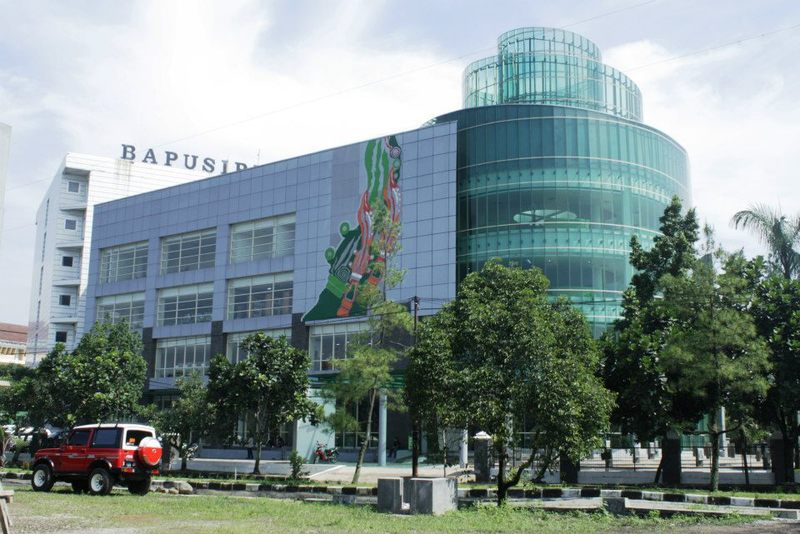

Dinas Perpustakaan dan Kearsipan Daerah Provinsi Jawa Barat (DISPUSIPDA) terbentuk dengan Peraturan Daerah Provinsi Jawa Barat Nomor 06 Tahun 2016 tentang Pembentukan dan Susunan Perangkat Daerah Provinsi Jawa Barat. Sebelumnya, DISPUSIPDA berbentuk Badan dengan nama Badan Perpustakaan dan Kearsipan Daerah Provinsi Jawa Barat (BAPUSIPDA). BAPUSIPDA dipimpin oleh Hj. Tati Iriani, S.H, M.M.
Pada tahun 2016, tepatnya pada tanggal 11 Januari 2016, Hj. Tati Iriani, S.H, M.M digantikan oleh ibu Dr. Hj. Nenny Kencanawati, M. Si sebagai Kepala Badan Perpustakaan dan Kearsipan Daerah Provinsi Jawa Barat dengan dilantik oleh Gubernur Jawa Barat, Ahmad Heryawan di Aula Timur Gedung Sate, Bandung. Dr. Hj. Nenny Kencanawati, M. Si diangkat dalam jabatan Kepala Badan Perpustakaan dan Kearsipan Daerah Provinsi Jawa Barat berdasarkan Keputusan Gubernur Jawa Barat nomor 821.2/kep.50-BKD/2016 tanggal 8 Januari 2016 dan dilantik pada tanggal 11 Januari 2016.
Pada 22 Februari 2017, Ibu Hj. Tati Iriani, S.H., M.M. dilantik kembali menggantikan Ibu Dr. Hj. Nenny Kencanawati, M. Si sebagai Kepala DispusipdaProvinsi Jawa Barat, karena bu Dr. Hj. Nenny Kencanawati, M. Si sudah memasuki masa purnabhakti pada tanggal 01 Februari 2017.
Jl. Kawuyaan Indah II no. 4. Soekarno Hatta, Jatisari, Buahbatu, Kota Bandung, Jawa Barat 40286